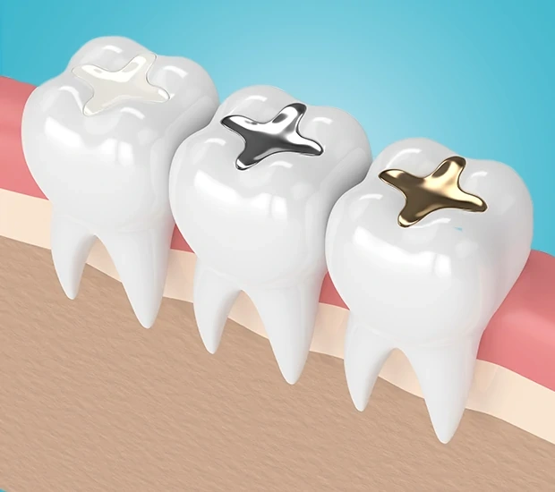

Modern Dental Fillings: Healthier Teeth and a More Natural Smile

Table of Contents
- Why Modern Dental Fillings Matter More Than Ever
- Latest Trends in Dental Filling Materials
- How Modern Fillings Protect Oral Health
- How Long Do Modern Dental Fillings Last?
- Expert Best Practices for Better Filling Outcomes
- When Fillings Are Part of a Larger Smile Plan
- Common Questions About Modern Dental Fillings
- How to Make Your Fillings Last Longer
- Conclusion: Modern Fillings Deliver Health, Strength, and Confidence
Modern dental fillings do more than just fill a cavity. These days, the materials and methods used aim to strengthen your teeth, keep the rest of your tooth healthy, and blend in with the rest of your smile. If you're wondering why today's fillings don't look like the old silver ones, it's because dental care has come a long way. Now, you can get fillings that not only work well but also look great. If you're thinking about how to keep your teeth in good shape, options like composite fillings and regular dental checkups play a big role in keeping your mouth healthy.
This guide covers the latest in dental fillings, how they help your oral health, what to expect from today's materials, and why it's a good idea to get fillings done early. You'll also find out how durable they are, common worries people have, and how preventive dental care can make your fillings last longer. If you need more extensive work, options like dental crowns and bridges or root canals might be necessary if the decay has gone too far for a simple filling.
Why Modern Dental Fillings Matter More Than Ever
Restoring function without sacrificing appearance
Older fillings might have stopped decay, but they were also pretty noticeable and not always comfortable. Today's fillings are designed to fix the tooth while matching your natural enamel, so you don't have to choose between having healthy teeth and a nice-looking smile. This is especially important for teeth that show when you smile, as appearance can affect your confidence.
Composite resins and ceramic fillings are popular because they can be color-matched to your teeth and shaped to fit perfectly. These materials bond with your tooth, helping to support the remaining enamel. This is important because preserving as much of the natural tooth as possible is a big goal in dental care. Every bit of healthy tooth structure counts toward keeping your mouth stable over time.
A shift toward patient-centered dentistry
Modern dental care is all about making sure you're comfortable, and treatments are convenient. With digital tools, better diagnostic methods, and techniques that are less invasive, treatment is usually quicker and more predictable. Many practices now use digital impressions, which make appointments shorter and improve how well the fillings fit. This focus on the patient is part of a larger trend in dental care, including preventive services and treatments that enhance your smile, like dental bonding and veneers.
This isn't just about looks. Fillings that fit better reduce sensitivity, leakage, and future decay around the edges. The result is a treatment that supports comfort and oral health. For you, that means fewer problems, less hassle, and a result that looks and feels natural.
Latest Trends in Dental Filling Materials
Composite resins that mimic natural tooth structure
Composite fillings are often the go-to for many cavities because they're versatile, durable, and match the color of your teeth. The material is applied in layers and hardened with a special light, making a filling that can handle regular chewing while blending in with your smile. When done right, composite materials bond to tooth surfaces, reinforcing the tooth instead of just filling a hole.
Composite fillings are especially good for front teeth, small to moderate cavities, and places where looks matter. They're easier to repair than older materials and usually require removing less healthy tooth structure. According to the American Dental Association, the choice of material should depend on where the tooth is, the size of the filling, and what you need specifically.
Ceramic fillings for durability and aesthetics
Ceramic fillings, often made from materials similar to porcelain, are another good-looking option. They're highly resistant to stains and are a strong choice when you need a filling that looks very natural. Sometimes, ceramic inlays or onlays are recommended when the cavity is too big for a simple filling but not big enough to need a full crown. This makes them a valuable choice in dental care.
Patients often like ceramic fillings because they keep their color over time and have a polished finish that resembles enamel. While the process might take more than one visit, digital workflows can make it quicker. The move toward digitally designed fillings is part of a bigger innovation in dentistry, where precision and efficiency are key.
Digital dentistry and 3D printing
Digital impressions, computer-aided design, and 3D printing have changed how many fillings are planned and made. Instead of using traditional impression material, many practices now use digital scans to accurately capture the shape of teeth. This digital data helps design custom fillings or indirect restorations that fit better and need fewer adjustments.
3D printing also improves consistency in how these are made. In dental care, accuracy isn't just about convenience; it can affect how well a filling seals against bacteria and how comfortable it feels when you bite. A precise fit reduces the likelihood of future problems and helps keep your smile healthy over time. If you appreciate modern technology, you'll likely enjoy seeing how digital dentistry improves both the process and the final result.
How Modern Fillings Protect Oral Health
Stopping decay before it spreads
One of the biggest benefits of modern fillings is stopping decay early. When a cavity is treated quickly, the dentist can remove the damaged part of the tooth and seal the area before it gets worse. This early action can prevent pain, infection, and more complicated procedures later. It also keeps more of your natural tooth, which is always better when possible.
The importance of timing is backed by guidelines from public health authorities like the Centers for Disease Control and Prevention. Regular check-ups help dentists find decay before it becomes severe, which is why routine care is so valuable. A simple filling today might prevent a root canal, crown, or extraction tomorrow, saving you time and money.
Preserving tooth structure with minimally invasive techniques
Modern dentistry emphasizes minimally invasive treatments. Instead of removing large sections of healthy tooth, dentists can use tools like air abrasion, precision burs, and sometimes lasers to target only the damaged area. This is especially useful when decay is caught early and a simple filling will do the job.
Minimally invasive care also reduces trauma to the tooth and surrounding tissues, making the experience more comfortable during and after treatment. For you, that often means a smoother experience and less sensitivity. When combined with regular dental cleanings and exams, these methods help keep small issues from becoming big ones.
Supporting long-term oral function
A tooth with a well-placed filling should function normally when you chew, speak, and smile. The filling needs to be shaped just right so it fits with your bite, because uneven contact can cause discomfort or wear. When everything lines up correctly, the filling can help keep your mouth working well for years.
Modern materials also help the tooth resist leakage at the edges of the filling. This seal is crucial because bacteria and food particles can get into a poorly fitting filling, leading to more decay. By choosing good materials and placing them with care, dentists can create a healthier environment in your mouth.
How Long Do Modern Dental Fillings Last?
Understanding lifespan and influencing factors
People often ask how long a modern filling will last. Generally, composite fillings last between 5 and 10 years, but many last longer with great care. Ceramic fillings can last even longer, especially if you keep up with oral hygiene and regular dental visits. No filling lasts forever, but modern ones are made to be durable.
Several things affect how long they last. The size and location of the filling matter because back teeth take more chewing pressure than front teeth. How well you care for your teeth, whether you grind them, your diet, and how well the filling was placed all play a role. If you grind your teeth, a nightguard might help extend the life of your fillings and reduce wear on your teeth.
Signs a filling may need attention
Even the best filling can wear out or fail eventually. Common signs include sensitivity to hot or cold, pain when biting, rough edges, discoloration around the filling, or the feeling that something has chipped or come loose. If you notice any of these, it's important to get it checked out before it gets worse.
Sometimes, a filling can just be repaired. Other times, if there's more decay or damage, it might need to be replaced. You shouldn't ignore symptoms, because small problems can turn into big ones. If you have an urgent issue, an emergency dentist can help decide if you need immediate treatment.
Why checkups extend the life of fillings
Regular dental visits are key to keeping an eye on fillings and catching issues early. A dentist can check the edges, test for sensitivity, and use X-rays if needed to look for hidden decay. These visits also allow for professional cleaning to remove plaque and tartar that could harm the tooth around the filling.
The difference between a filling lasting five years and ten years often comes down to maintenance. Preventive care isn't just about avoiding cavities; it's about protecting the work already done. A consistent schedule of cleanings, exams, and good home care often leads to the best long-term results.
Expert Best Practices for Better Filling Outcomes
Early detection is still the gold standard
Dentists always say that the earlier a cavity is treated, the better. Small cavities need smaller fillings, which means less drilling and less impact on the healthy tooth. Early treatment is also more comfortable, which can make future dental visits less stressful.
This is why experts suggest not waiting for pain to show up. Cavities can sneak up on you, and by the time you feel pain, the decay might already be serious. Keeping up with preventive visits and responding quickly to sensitivity or visible changes is one of the smartest ways to protect your smile.
Choosing the right material for the right tooth
There's no one-size-fits-all filling material. Composite resin might be perfect for a visible tooth or a moderate cavity, while ceramic might be better for a bigger area where stain resistance and durability are important. In some cases, other treatments might be needed depending on the damage and the tooth's overall condition.
A personalized treatment plan usually includes a discussion about cost, durability, appearance, and chewing forces. This conversation helps you make informed decisions rather than picking a material based on looks alone. When needed, treatments can be combined with other cosmetic or structural options like smile makeovers or, for more serious cases, full mouth reconstruction.
Technology improves precision and comfort
Advanced tools are making filling placement more predictable and efficient. Digital scanning, high-resolution imaging, and precision tools help dentists create better-fitting fillings. These improvements reduce time in the chair, make you more comfortable, and increase the chances that the filling will work as it should.
Technology also helps communication. Many people find it easier to understand their treatment when they can see digital images or scans of their teeth. This transparency builds trust and makes people more confident about getting care. In modern dentistry, the experience is just as important as the result.
When Fillings Are Part of a Larger Smile Plan
Combining restorative and cosmetic dentistry
Sometimes a filling is just one step in a bigger plan to improve both health and appearance. You might need a filling to fix a cavity and then choose whitening or bonding to make your smile more uniform. In other cases, a tooth with a big issue might benefit from a crown, veneer, or laminate to restore both look and structure.
This comprehensive approach is common because people want treatments that support both function and confidence. A carefully placed filling can be the foundation for a better-looking smile, especially when combined with other services. In some cases, a patient might eventually need dental implants or All-on-4 implants if a tooth can't be saved, although fillings are usually the first step for smaller problems.
A real-world example of cosmetic and restorative improvement
Imagine someone who wants to improve their tooth alignment, color, and overall look. A plan that combines crowns and veneers can create a more balanced smile, and the same idea applies to fillings when a cavity is visible when you smile. The goal is not just to fix damage but to create a result that looks natural and feels comfortable.
Case-based planning is especially useful when you have multiple concerns at once. Aesthetic goals, bite function, and long-term durability need to be considered together. That's why experienced dentists often look at the whole smile rather than focusing on just one tooth. For inspiration, you might check out real cases like the one featured in this before-and-after smile transformation.
Local access to modern restorative care
People in South Florida can benefit from easy access to advanced restorative treatments, routine visits, and cosmetic options all in one place. A complete dental team can assess whether a cavity needs a simple filling, a more advanced restoration, or a mix of services to get the best results. If you're looking for care in the area, it's good to know that providers offering dental services in Hollywood and nearby communities may also support advanced planning for your dental needs.
Modern dentistry works best when everything is connected, meaning preventive care, restorative care, and cosmetic improvements all work together. This approach creates healthier outcomes and better-looking smiles over time.
Common Questions About Modern Dental Fillings
Are fillings safe?
For most people, modern filling materials are safe and work well. Composite and ceramic options are popular because they're durable and look good. As with any dental material, there can be rare issues like sensitivity or allergic reactions, but these aren't common. Your dentist can go over your medical history and suggest a material that fits your needs.
Can a filling be replaced if it fails?
Yes, fillings can usually be fixed or replaced if they wear out, chip, or get affected by more decay. The best approach depends on how much of the tooth is involved. Sometimes a simple replacement is enough; other times, a crown or more extensive work might be needed. The key is to address the issue early before it causes more damage.
What about temperature sensitivity?
Some temporary sensitivity after a new filling is normal, especially if the cavity was deep or close to the nerve. This usually gets better in days or weeks. If it doesn't improve or gets worse, the bite may need adjustment, or the tooth may need closer look. You should report ongoing pain so the dentist can find the cause and prevent further problems.
How do fillings fit into overall oral hygiene?
Fillings don't replace the need for good oral hygiene. Brushing twice daily, flossing, avoiding sugary snacks, and going to regular cleanings all help fillings last. Good habits also protect the rest of your mouth from new decay. When patients stay consistent, they protect both the treated tooth and the teeth around it.
How to Make Your Fillings Last Longer
Follow a strong home care routine
The best way to protect a filling is to take care of your teeth every day. Use fluoride toothpaste, floss carefully around the filled tooth, and avoid chewing hard things like ice or pens. If you grind your teeth, ask your dentist if a nightguard could help protect your fillings.
Your diet matters too. Frequent snacking and sipping sugary drinks increase the risk of new decay around the edges of a filling. Choosing tooth-friendly foods and drinking water can lower that risk. Patients who follow these habits often have longer-lasting, more reliable fillings.
Keep up with preventive visits
Regular check-ups allow your dentist to keep an eye on each filling and suggest early action if something changes. This is important because minor wear might not be visible at home. Professional monitoring provides peace of mind and helps stop small issues from becoming bigger problems.
If you're overdue for a cleaning or unsure about a filling's condition, it's smart to schedule a check-up sooner rather than later. Regular visits are one of the best investments in long-term oral health, especially if you have several fillings.
Know when to upgrade your treatment plan
Sometimes a filling isn't the best option anymore. If a tooth has a lot of damage, repeated decay, or structural weakness, your dentist might suggest a crown, an implant-supported restoration, or another option. These decisions are made to keep your mouth working well and reduce the chance of needing repairs again.
In more advanced cases, combining preventive, restorative, and cosmetic services might give the best overall result. A thoughtful treatment plan can improve how you chew, your comfort, and how your smile looks all at once.
Conclusion: Modern Fillings Deliver Health, Strength, and Confidence
Modern dental fillings have changed dental care by making treatments stronger, more natural-looking, and more comfortable. With materials like composite resin and ceramic, dentists can restore tooth function while keeping the natural look of your smile. Advanced tools like digital impressions and minimally invasive techniques have improved precision and made treatments easier for patients.
The key takeaway is that early detection and routine maintenance make all the difference. A filling done at the right time can stop bigger problems, cut future costs, and help you keep more of your natural tooth. If you need an exam, have sensitivity, or want to discuss options for a damaged tooth, think about scheduling a visit and asking about modern composite fillings along with preventive care that's right for you. To learn more about healthy treatment choices or plan your next appointment, explore your options with a trusted local team at dental cleaning and examinations and take the next step toward a healthier, more confident smile.